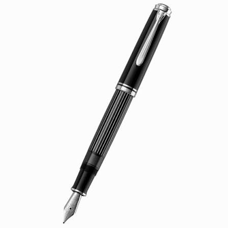

ปากกาหมึกซึมคลาสสิก (Fountain Pen)

เสน่ห์แห่งการเขียนระดับคลาสสิก ปากกาหมึกซึมช่วยให้เส้นสายลายมือลื่นไหลอย่างมีศิลปะ สามารถเลือกเปลี่ยนสีหมึกได้หลากหลาย และปรับขนาดหัวปากกาตามความชอบ เหมาะสำหรับผู้ที่รักการเขียน ลายมือสวย และงานเซ็นเอกสารสำคัญ